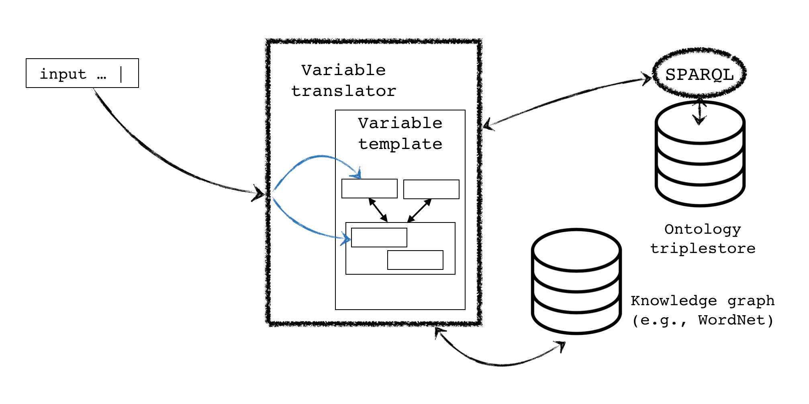

The Scientific Variables Ontology (SVO) is a blueprint outlining all of the required and optional components of creating a machine-interpretable scientific variable concept. SVO comprises an upper ontology (SVU) that contains a set of modular conceptual categories and defines required and optional relationships between them, as well as a lower ontology (SVL) that contains instances within each category. SVL can be manually or automatically populated with concepts from a wide range of fields to create custom variables.
SVO is highly modular. It comprises a manageable number of concept classes that can then be assembled in a mix-and-match fashion to create custom variable concepts. SVO is build on the idea that any observation involves identifying a Phenomenon of interest for observation and a Property whereby some characteristic of the Phenomenon is identified and its value is assessed, whether qualitatively or quantitatively, subjectively or objectively, for the purpose of sharing information about the observed Phenomenon with others. A Phenomenon can be conceptually represented in terms of the physical aspects that are intrinsic to it, namely its substance or essence (that of which it is made up, Matter) and/or its spatial extent, its form or shape, the manner in which it takes up space (Form). These ideas define the modular unit from which all other phenomena, are recursively defined. The different granular levels at which spatial phenomena can be defined are illustrated below.
It is important to note that, although we require some components to be defined for some categories (e.g., Body consists of both Matter and Form), these components need not be explicitly declared and may be represented by blank nodes, which we will denote with the notation _:?. Additionally, any observed spatial phenomenon may also be represented with an Abstraction. Note that this use of the term abstraction should not be confused with the general term of abstraction meaning the human mind's interpretation of what it observes; this general idea of abstraction is already encompassed in the term Phenomenon, which is defined as the [human] mind's interpretation of the physical world, which may be thought of as being made up of noumena, or things as they are in and of themselves. Rather, Abstraction here is used to refer explicitly to mathematical models that approximate observed phenomena for the purpose of quantifying their characterics.
In addition to spatial phenomena, it is also important to be able to create spatiotemporal phenomena as well. The simplest spatiotemporal phenomena are spatial phenomena that also involve a Process. To build more complex spatiotemporal phenomena, we can take the simple modular building units and combine them as shown in the following diagram, by introducing the Participant class that assigns a Role to any Participant.
By using a similar design pattern, we can also define spatial context for phenomena (e.g., such as 'below the surface of the water' or 'before the hurricane') by combining the modular Phenomenon unit with a Relationship (e.g., below or before). SVO also provides a mechanism similar to the context mechanism for identifying a Reference for expressing a measurement reference for a Property (e.g., height above sea surface).
Lastly, once a Phenomenon has been identified, it can be paired with a Property in order to completely identify a Variable. An example of how a complex variable could be built up from the modular units is shown in the diagram below. In this diagram, the ovals represent instances of the Phenomenon class, while the rectangle represents an instance of the Property class.
SVO is designed to balance a linguistic model of the world with a scientific model. By creating atomistic classes and customizable modules, SVO attempts to provide a principled template for filling in information about a variable from freeform text. This is because SVO is designed expressly to be not just an ontology but also a set of tools for manual or automated ontology generation. These translation tools use rules-based natural language processing techniques along with previously recorded linked data/knowledge graph information stored in public repositories to create variable concepts from unstructured text descriptions of variables. Thus, one of the primary goals of SVO is to make significant progress towards automated ontology generation of scientific variables following ideas laid out in an upper ontology of higher level concepts. A simplified diagram of the text-to-SVO mapping system is shown below.

SVO originated in the idea of creating standard names for model integration. Standard names are by necessity reliant on a controlled vocabulary to ensure that any given term or set of terms has a one-to-one mapping to a specific meaning. An ontology, on the other hand, is concept-based and thus terminology agnostic. In order to allow seamless mapping from ontology to standard name, each granular concept in the ontology is labeled with a skos:prefLabel that, in combination with a set of rules for assembling a standard name, can be used to automatically generate standard names. Due to its customizable nature, it is not necessary to be restricted to one set of rules or one vocabulary for generating standard names. Rather, it is possible to introduce a custom serializer along with custom preferred labels for different domains, and thus generate standard names following different rules, as necessitated by a given application.